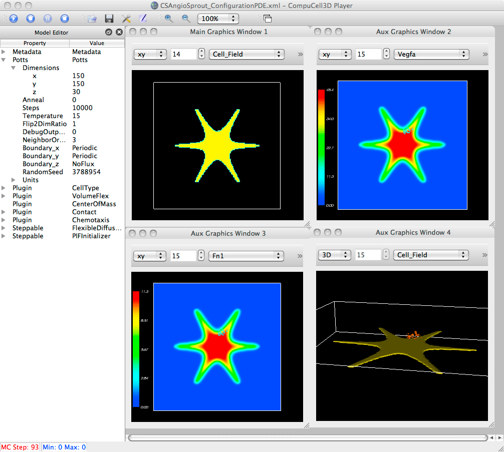

from Richard: Mac 3.6.0 your binary build. Something else is the matter too. The OpenMP code, on the Mac at least, may be waiting for resources, and/or there are load-balancing race issues. I am also getting some computational/graphical anomalies when I increase the number of ThreadsPerVPU. Shark says it is spending 90% of its time doing gomp_thread_start under semaphore_wait_signal_trap. To better compare with your system, I used my MacBook Pro with the 2.66GHz Core i7 processor, and ThreadsPerVPU = 1 and VirtualProcessingUnits = 2. It created two gridIds and 4 subgrids each. When I run only the XML, I think my results at 100MCS would be approximately: Secretion Plugin | PDE only | Secretion Plugin with Steppable 860 sec | 240 sec | 850 (steppable has no effect) Interestingly/Strangely, setting the VPUs (and threads) to 1, the PDE simulation runs slower, as expected, but the Plugin/Steppable simulation runs faster. So more threads helps the PDE, as seen previously, but more threads impede the Plugin/Steppable. More absolute time, same ratio as Maciek. Is this absolute difference due to 64-bit vs 32-bit? Mac vs Windows? PDE only | Secretion Plugin with Steppable 385 sec | 505 sec Setting ThreadPerVPU to 4 and VPUs to 2, 8 gridIds are created. Same inverse, but non-linear trend. PDE only | Secretion Plugin with Steppable 188 sec | 1055 sec (est.) With 64 threads: 3000 sec. Therefore, If I am going to loose the advantage of OpenMP with the Secretion Plugin (allowing me to start/stop secretions per cell), my eventual simulations will take many days to run.